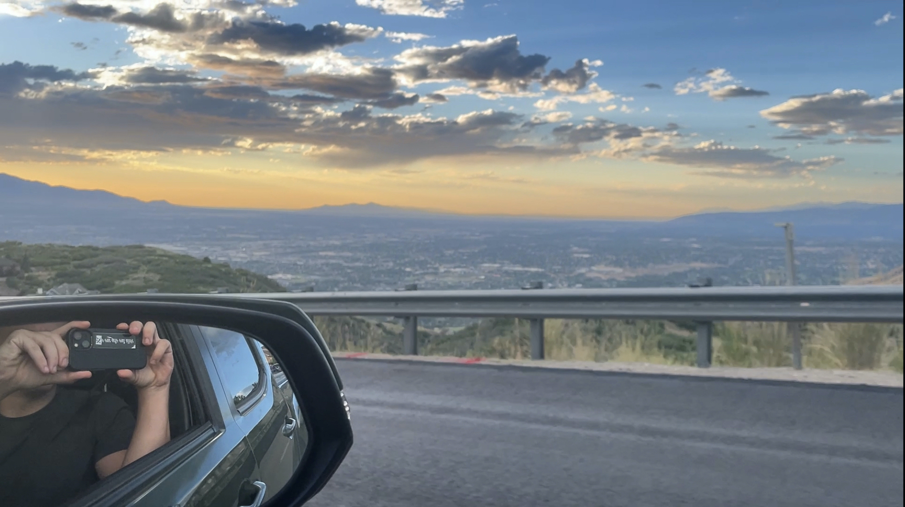
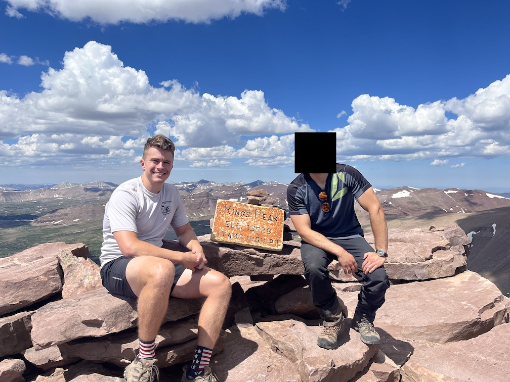
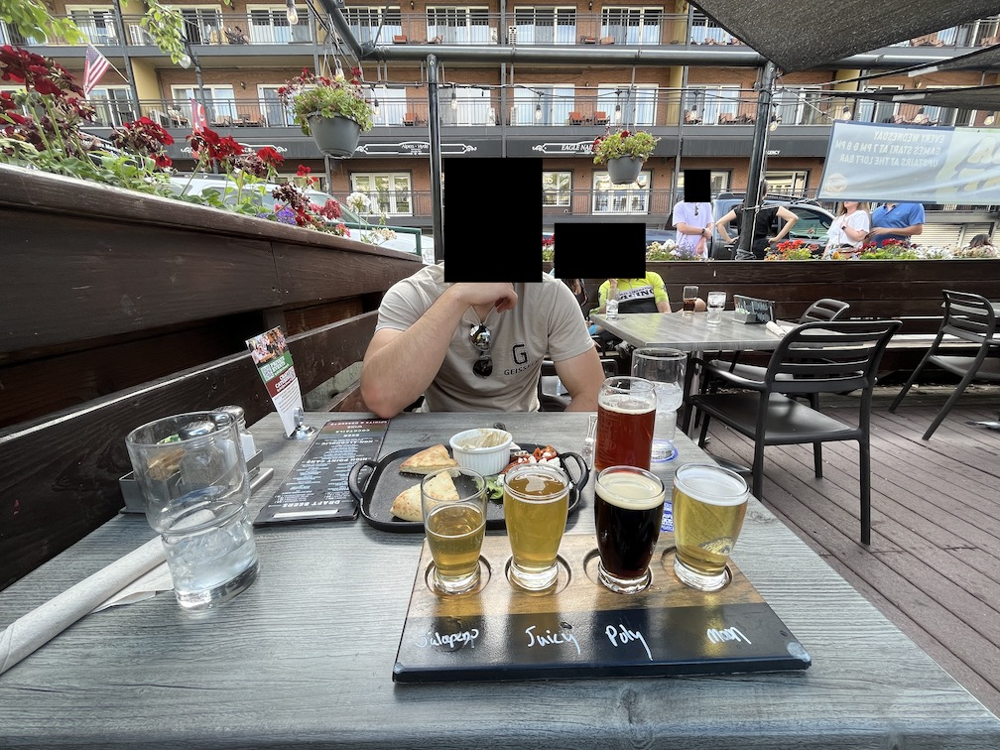

Salt Lake City trip report from 27-31 July 2023.
After leaving work questionably early to hit the airport lounge and load up on a gourmet mini entrees and desserts, I hopped on the plane and landed a few hours later in the rather strange Salt Lake Valley. Why strange? I've never seen anything like it geographically. To the south and east were lush, green mountains that were fairly prominent; to the north and west was the Great Salt Lake and expansive salt flats. I now understand why Brigham Young chose this spot. Any shorter and he'd be in steep terrain, any further and he'd be in a salty desert.
My friend, C, picked me up to head downtown to Whiskey Street, a cocktail bar and restaurant that turned out to offer Pappy Van Winkle's 23 Year. Now I would never buy a glass of it given the $400 price tag attached, but it's fun to show a few friends who are aware of its rarity "hey, look! I found a Pappy offering in the wild!". I had a delicious Cuban sandwich with a side salad and two thirst-quenching Hefeweizens.
Next up was a driving tour of the Valley. C drove me to his workplace via the "scenic route", a road that went past many mountain bikers of all ages and genders—children, teenagers, adults, and even weathered veterans—heading to the trails for late afternoon rides. We passed at least three awesome-looking trails along the way, and we were only driving for 20 minutes! 20 minutes barely gets me to the highway in my city, much less miles of singletrack.
We crashed early-ish with the sun still setting on the horizon.
Breakfast consisted of a large scramble and three pancakes at Big Bear Diner, a national chain that extends at least as far as Texas.
We picked up my camping rental gear—sleeping pad, sleeping bag, tent, and poles—and some other miscellaneous items at the local REI before heading to Snowbird, a nearby "resort" (an exaggeration given its size) to explore a bit. The tickets up the gondola were $42 per person for one ride, eliciting a rather painful feeling near my groin and forcing us to retreat back to the car to head to the grocery store for that night's dinner and tomorrow's fuel for the hike. All-in-all my food was looking to be burgers and chips for dinner, Clif Bars, Gu, and trail mix throughout the day, and finally steaks and leftover snacks for a celebration dinner. Impeccable nutrition.
Packing was finished around 2:30pm and we headed out on the uneventful three-hour drive up to Wyoming and back into Utah. After getting to the trailhead and backtracking a bit to find a campsite, we pitched my tent (C slept in his car) and got dinner going. The burgers were good and chips addictive.
I drifted off into a restless sleep on my inflatable sleeping pad in anticipation of the next day's effort.
We were both up at 3:00am and immediately started packing, finally starting the hike around 4:40am in the pitch black, save a bit of starlight. Headlamps illuminated the rocky, root-laden path for us as we sped along the trail trying to take advantage of the cool temperature and our fervent energy. 2.5 hours in and we had exited the trees and made it to a vibrant meadow with beautiful views of the now-sunlit peaks to the south. C started feeling the elevation about 30 minutes before we reached Gunsight Pass, giving us a short reprieve before the real work started. Did I mention it had been almost completely flat, or at least false flat, up to that point?
Gunsight Pass to Anderson Pass, the start of the main scramble to the summit, was rough on the feet. The trail was poorly marked, putting us off-course and forcing extra energy expenditure to get back on. The flat part at the top of Gunsight was incredibly rocky and had us jumping rock-to-rock, arms waving frantically trying to keep balance.
After a few hours of this we arrived at the final push, a mile-ish-long steep scramble up nothing but rocks, with heavy exposure to the south and not much the north. We charged up the hill, myself with reckless abandon and C with caution. Two false summits, three stop-and-admire-the-view rest breaks, and four rocks that shift under my feet later we were at the highest point in Utah. I ate a exceptionally-delicious Snickers bar and took in the view with our fellow hikers. C was ready to head down as the altitude was getting to him even more now.
And get to him it did, or as he put it, he got his ass beat by oxygen. After making it to Anderson, his demeanor had noticeably deteriorated to a sullen shell of his former self: no jokes, no smiles, no sounds. This, coupled with the storm that was fast approaching, worried me greatly. Altitude sickness combined with soaking wet clothes (based on the loud thunder and threatening color of the clouds) did not go well together. I pushed C hard to make it to Gunsight so there was available shelter if worse came to worst.
But the clouds soon passed and unleashed the shiny afternoon sun, alleviating my fears and allowing us to continue scrambling sideways through Gunsight. C immediately felt better upon getting around 11,000 ft and was back to his cheery self, ready to finish the 11-mile journey back to the trailhead. We stopped at a small pond so I could wade in and cool off, then continued on, our feet hurting and hopeful that we were only two-ish hours from reprieve. Hint: we weren't. We kept walking and walking and walking some more, every turn hopeful of sight of the trailhead until we actually turned and saw nothing. It was about 30 minutes after I expected us to finish that a car came into sight, then a fence, then the road, nd finally happiness. We were done. Well, C was. I had to make the 20-minute walk back to get the car while he used the bathroom.
We packed up and hauled ass home, arriving around 11:30pm to glorious air conditioning and one of the most refreshing showers I've ever had.
Statistics:
I woke up at 7:00am, then 9:30am, then finally 10:30am to the smell of breakfast burritos C had sneakily ordered while I slumbered. $7 for a massive burrito was the freaking move: eggs, potatoes, sausage, ham, cheese, and vegetables hit the spot.
We lounged around the apartment for a few hours watching YouTube videos to buy as much time as possible for our legs to recover before continuing on with our day. It didn't help. I had to hobble around to do what I needed, all while being extra cautious around the tender blisters that covered both feet. We unpacked the car, returned the rental gear I got from REI, then headed out for Park City.
Park City was almost exactly how I remember, but how much can a city's downtown change in 12 years? This memory included both physical buildings and atmosphere—people were riding around on their mountain bikes, kids following their parents around, shopping galore, all things you'd expect in the summer at a mountain town. We got dinner and beers at Wasatch Brew Pub and people watched before exploring the town for another hour and heading back home.
I packed everything and promptly hit the hay to prepare for my 4:00am Uber ride to the airport in the morning.
SLC is probably very boring if you aren't an outdoors person. They have climbing, mountain biking, skiing, and hiking all within a very short drive, but what else? Their food scene is supposedly trash; there are few parks; the nightlife scene is lacking given the predominant culture; traveling to other places nearby is also very outdoorsy (Yellowstone, Moab, Park City, etc), but also expensive if going the airport route.
People were much thinner in SLC than Texas.